토목산업기사 (2007-03-04 기출문제)
1과목: 응용역학
1. 평면응력을 받는 요소가 다음과 같이 응력을 받고 있다. 최대 주응력을 구하면?
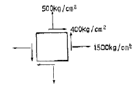
- 640kg/cm2
- 1640 kg/cm2
- 3600 kg/cm2
- 1360kg/cm2
(정답률: 알수없음)

2. 다음 그림과 같은 봉이 천정에 매달려 B, C, D점에서 하중을 받고 있다. 전구간의 축강도 AE가 일정할 때 이 감은 하중 하에서 BC 구간이 늘어나는 길이는?
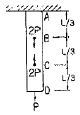
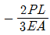
- 0
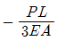
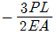
(정답률: 알수없음)
3. 장주에서 좌굴응력에 대한 설명 중 틀린 것은?
- 탄성계수에 비례한다.
- 세장비에 비례한다.
- 좌굴길이의 제곱에 반비례한다.
- 단면2차모멘트에 비례한다.
(정답률: 알수없음)
4. 지름 2cm의 강철봉을 8ton의 힘으로 인장할 때 봉의 지름이 가늘어진 양은? (단, 프와송 비 v =0.3, 탄성계수 E=2×106kg/cm2)
- 0.00076mm
- 0.0076 mm
- 0.042mm
- 0.42mm
(정답률: 알수없음)
5. 휨 강성이 EI로 일정한 균일 단면을 가지는 단순보에 집중하중 p가 작용한다. 이 보의 최대 처짐은?
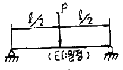
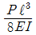
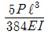
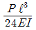
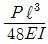
(정답률: 알수없음)
6. 그림과 같은 라멘(Rahmen)은 몇 차 부정정 구조인가?
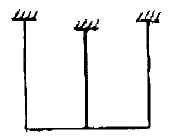
- 6차
- 7차
- 8차
- 9차
(정답률: 알수없음)
7. 다음 그림과 같은 1차 부정정보에서 지점 B의 반력은?
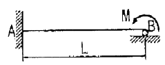
- 1M / L
- 1.5M / L
- 2M / L
- 2.5M / L
(정답률: 알수없음)
8. 다음 중 전달 응을 이용하여 부저정 구조 율을 풀이하는 방법은?
- 처짐각법
- 모멘트 분배법
- 변형임 치법
- 3면 모멘트법
(정답률: 알수없음)
9. 다음 그림과 같은 단순보dml 중앙에 집중하중이 작용할 때 단면에 생기는 최대 전단응력은 얼마인가?
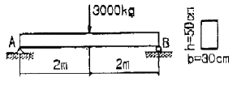
- 1.0kg/cm2
- 1.5kg/cm2
- 2.0kg/cm2
- 2.5kg/cm2
(정답률: 알수없음)
10. 그림과 같이 부재단면에서 도심 Xo 축으로부터 y1 축으로부터 y1 떨어진 축을 기준으로한 단면2차모멘트의 크기가 Ix1일 때, 도심축으로부터 3y1 떨어진 축을 기준으로한 단면2차모멘트의 크기는?
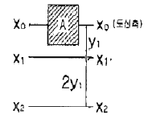
- Ix1 + 2Ay12
- Ix1 + 3Ay12
- Ix1 + 4Ay12
- Ix1 + 8Ay12
(정답률: 알수없음)
11. 그림과 같은 보의 C 점에서의 처짐은? (단, EI는 모든 경간에 걸쳐 일정함)
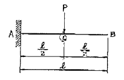
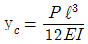
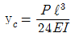
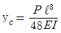
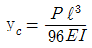
(정답률: 알수없음)
12. 변의 길이가 30cm인 정사각형에서 반경 5cm의 원을 도려낸 나머지 부분의 도심은? (단, 도려낸 원dm lwndtla은 정방형의 중심에서 10cm에 있음)
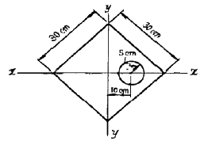
- 원점에서 우로 0.956 cm
- 원점에서 좌로 0.956 cm
- 원점에서 우로 1.346 cm
- 원점에서 좌로 1.346 cm
(정답률: 알수없음)
13. 재적과 단면적과 길이가 같은 장주에서 양단활절 기둥의 좌굴하중과 양단고정 기둥의 좌굴하중과의 비는?
- 1 : 16
- 1 : 8
- 1 : 4
- 1 : 2
(정답률: 알수없음)
14. 그림과 같이 천정에 두 끈을 매고 10kgf의 물체를 매달았을 때 두 끈의 인장력 T1, T2의 합은?
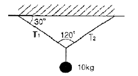
- 20kg
- 11.55kg
- 10kg
- 17.32kg
(정답률: 알수없음)
15. 다음의 직사각형 단면으 갖는 캔디레버보에서 최대 휨응력 σ는 얼마인가?
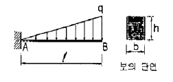
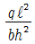
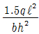
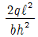
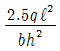
(정답률: 알수없음)
16. 그림과 같은 연속보 B점의 휨모멘트 MB의 값은?
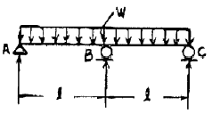
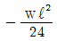
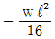
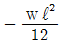
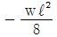
(정답률: 알수없음)
17. 경간 ℓ=10m인 단순보에 그림과 같은 방향으로 이동하중이 작용할 때 절대 최대 휨모멘트를 구한 값은?
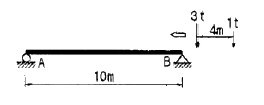
- 4.5 t·m
- 5.12 t·m
- 6.8 t·m
- 8.1 t·m
(정답률: 알수없음)
18. 에너지 불변의 법칙을 옳게 기술한 것은?
- 탄성체에 외력이 작용하면 이 탄성체에 생기는 외력의 일과 내력이 한 일의 크기는 같다.
- 탄성체에 외력이 작용하면 외력의 일과 내력이 한 일의 크기의 비가 일정하게 변화한다.
- 외력의 일과 내력의 일이 일으키는 휨모멘트의 값은 변하지 않는다.
- 외력과 내력에 의한 처징비는 변하지 않는다.
(정답률: 알수없음)
19. 두 힘 30kg과 50kg 이 30° 의 각을 이루고 작용하고 있을 때 합력의 크기는?
- 64.42 kg
- 68.55 kg
- 70.00 kg
- 77.45 kg
(정답률: 알수없음)
20. 다음 트러스에서 ①부재의 부재력은 얼마인가?
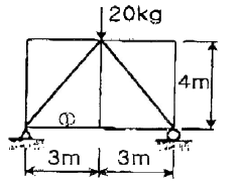
- 4.5 kg
- 6.0 kg
- 7.5 kg
- 8.0 kg
(정답률: 알수없음)
2과목: 측량학
21. 곡률반경 R=200m의 단 곡선을 설치하고 있다. 시단 현 김이 9.5m에 eoo한 편각은 얼마인가?
- 0° 58° 45°
- 1° 07° 12°
- 1° 15° 51°
- 1° 21° 39°
(정답률: 알수없음)
22. 초점거리 150mm, 비행고도 4500m 인 항공사진에서 사진 측량의 평명오차 한계는?
- 0.3 ~ 0.9 m
- 1.0 ~ 1.5 m
- 1.7 ~ 2.1 m
- 2.8 ~ 3.4 m
(정답률: 알수없음)
23. 원격탐측(Remote sensing)의 정의로 가장 올바른 것은?
- 지상에서 대상물체의 전파를 발생시켜 그 반사파를 이용하여 관측하는 것
- 센서를 이용하여 지표의 대상물에서 반사 또는 방사된 전자스펙트럼을 관측하고 이들의 자료를 이용하여 대상물이나 현상에 관한 정보를 얻는 기법
- 물체의 고유스펙트럼을 이용하여 각각의 구성성분을 지상의 레이더망으로 수집하여 처리하는 방법
- 우주선에서 찍은 중복사진을 이용하여 항공사진의 처리와 같은 방법으로 판독하는 작업
(정답률: 알수없음)
24. 다음 부지의 토량은 얼마인가?
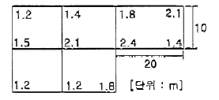
- 1200 m3
- 1755 m3
- 2037 m3
- 2276 m3
(정답률: 알수없음)
25. 노선의 종단측량 결과는 종단면도에 표시하고 그 내용을 기록하게 된다. 이 때 포함되지 않는 내용은?
- 지반고와 계획고의 차
- 측점의 추가거리
- 계획 선의 경사
- 용지 폭
(정답률: 67%)
26. 사진 상에서 태양광선의 반사에 의해 젬레이션(halation)이 발생하여 밝게 촬영되는 현상을 무엇이라 하는가?
- Sun Spot(선 스풋)
- Shadow Spot
- Lineament(리니어먼트)
- Soll Mark(소임 마크)
(정답률: 알수없음)
27. 하천측량 작업을 크게 3종류로 나눌 때 그 종류로 알맞지 않은 것은?
- 심천측량
- 유량측량
- 수준측량
- 평면측량
(정답률: 알수없음)
28. 삼각형의 면적을 구하고자 할 때 두 변의 길이가 각각 60.35m, 120.82m이고 그 사이의 각이 80˚ 45˚ 이었다면 삼각형의 면적은?
- 3598.34 m2
- 4826.42 m2
- 3465.34 m2
- 5027.22 m2
(정답률: 알수없음)
29. 다음 그림에서 DE의 방위각은? (단, ∠A = 48˚ 50˚ 40˚ , ∠B = 43˚ 30˚ 30˚, ∠C = 46˚ 50˚ 00˚, ∠D = 60˚ 12˚ 45˚)
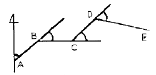
- 139˚ 11˚ 10˚
- 96˚ 31˚ 10˚
- 92˚ 21˚ 10˚
- 1⑤˚ 43˚ 55˚
(정답률: 알수없음)
30. 수준측량을 할 때, 짝수 횟수로 표척을 세워 출발점에 세운 표척을 도착점에도 세우도록 함으로 소거되는 오차는?
- 시준선 오차
- 표척눈금의 엄점오차
- 표척 경사에 의한 오차
- 구차에 의한 오차
(정답률: 알수없음)
31. 다음 그림과 같은 결합 트래버어스에서 A점 및 B점에서 각각 AL 및 BM의 방위각이 기지일 때 측각 오차를 표시하는 식은 어느 것인가?
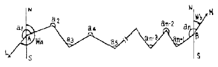
- Δa= Wa + Σa – 180˚ (n-3) - Wb
- Δa= Wa + Σa – 180˚ (n+2) - Wb
- Δa= Wa + Σa – 180˚ (n+1) - Wb
- Δa= Wa + Σa – 180˚ (n-1) - Wb
(정답률: 알수없음)
32. 교점(I,P)의 위치가 기점으로부터 143.25m 일 때 곡률반경 150m, 교각 58˚ 14˚ 24˚ 인 단 곡선을 설치하고자 한다면 곡선시점의 위치는? (단, 중심 말뚝 간격20m)
- No.2 + 3.25
- No.2 + 19.69
- No.3 + 9.69
- No.4 + 3.56
(정답률: 알수없음)
33. 수평각 측정법 중에서 1등 삼각측량에서 주로 이용 되는 방법은?
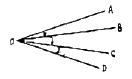
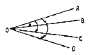
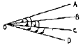
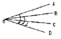
(정답률: 알수없음)
34. 기포관의 기포를 중앙에 있게 하여 100m 떨어져 있는 곳의 표적 높이를 읽고 기포를 중앙에서 5눈금 이동하여 표적의 눈금을 읽은 결과 그 차가 0.⑤m이었다면 강도는?
- 19.6˚
- 20.6˚
- 21.6˚
- 22.6˚
(정답률: 46%)
35. 평판측량의 후방교회법을 설명한 것으로 옳은 것은?
- 어느 한 점에서 출발하여 측정의 방향과 거리를 측정하고 다음 측점으로 평판을 옮겨 차례로 측정 하는 방법
- 임의의 지점에 평판을 세우고 방향과 거리를 측정하여 도상의 위치를 결정하는 방법
- 2개 이상의 기지 점에 평판을 세우고 방향 선만으로 구하려고 하는 점의 도상 위치를 결정하는 방법
- 구하려고 하는 점에 평판을 세워서 기지 점을 시준 하여 도상의 위치를 결정하는 방법
(정답률: 알수없음)
36. 지상 100m × 100m의 면적을 4cm2로 나타내기 위해서는 축적을 얼마로 하여야 하는가?
- 1/250
- 1/500
- 1/2500
- 1/5000
(정답률: 알수없음)
37. 다음 사항 중 옳지 않은 것은?
- 측지학이란 지구 내부의 특성, 지구의 현상, 지구 표면의 상호위치 관계를 정하는 학문이다.
- 기하학적 측지학에는 천문측량, 위성측지, 높이결정 등이 있다.
- 물리학적 측지학에는 지구의 형상 해석, 중력측정, 지자기측정 등을 포함한다.
- 측지측량(대지측량)이란 지구의 곡률을 고려하지 않은 측량으로서 20km 이내를 평면으로 취급한다.
(정답률: 알수없음)
38. 다음 표는 도로 중심선을 따라 20m 간격으로 종단측량을 실시한 결과이다. No.1의 계획 고를 52m로 하고 3%의 상향 기울기로 설계한다면 No.5의 성토 또는 절토고는?
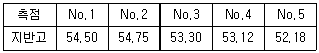
- 2.82m (점토)
- 2.22m (점토)
- 2.82m (점토)
- 2.22m (점토)
(정답률: 알수없음)
39. 사진측량의 특징에 대한 설명으로 옳지 않은 것은?
- 정량적, 정성적 해석이 가능하다.
- 측량의 정확도가 균일하다.
- 주기적인 변형측량과 같은 4차원 해석이 불가능하다.
- 측척변경이 용이 하며 넓은 지역에서는 경제적이다.
(정답률: 알수없음)
40. A와 B점의 좌표가 XA = -11328.58 m, YA = -4891.49 m, XB = -11616.10m, YB = -5240.80 m 이라면 AB의 수평거리 S와 방위각 T로 옳은 것은?
- S = 549.73 m, T = 129˚ 27˚ 21˚
- S = 452.42 m, T = 230˚ 32˚ 30˚
- S = 452.42 m, T = 219˚ 27˚ 29˚
- S = 452.42 m, T = 309˚ 27˚ 21˚
(정답률: 알수없음)
3과목: 수리학
41. 관수로에서 Reynolds 수가 300 일 때 추정할 수 있는 흐름의 상태는?
- 상류
- 사류
- 층류
- 난류
(정답률: 알수없음)
42. 단면적 2.5cm2 , 깊이 2m인 원형강철봉의 중량이 대기 중에서 2.75kg 이었다면 단위중량이 1t/m3인 수중에서의 무게는?
- 2.25kg
- 2.55kg
- 2.75kg
- 2.85kg
(정답률: 알수없음)
43. 도수(跳水)에 관한 설명으로 옳지 않은 것은?
- 상류에서 사류로 흐름이 변화될 때 방생된다.
- 사류에서 상류로 변화될 때 생긴다.
- 도수 전후의 총력치(비력)는 동일하다.
- 도수로 인해 때로는 막대한 에너지 손실도 유발된다.
(정답률: 알수없음)
44. 위어(Weir)의 보편적인 사용목적이 아닌 것은?
- 유량측정용으로 사용
- 분수를 목적으로 사용
- 수압측정을 목적으로 사용
- 취수를 위한 수위 증가 목적으로 사용
(정답률: 알수없음)
45. 어떤 유역에 20분간 지속된 강우강도 20mm/hr 이었다면 강우량은?
- 1.00mm
- 6.67mm
- 10.33mm
- 20.00mm
(정답률: 알수없음)
46. 다음 그림과 같이 안지름이 2m, 높이 3m의 원통형 수조에 깊이 2.5m까지 물을 넣고 각속도 ω로 회전시킬 때 물이 수조 상단에 도달할 때의 각속도는 약 얼마인가? (문제 오류로 문제 및 보기 내용이 정확하지 않습니다. 정확한 내용을 아시는 분께서는 오류신고를 통하여 내용 작성 부탁드립니다. 정답은 4번입니다.)
- W = 1.4[rad/s]
- W = 2.4[rad/s]
- W = 3.4[rad/s]
- W = 4.4[rad/s]
(정답률: 알수없음)
47. 기온에 관한 다음 설 명중 옳지 않은 것은?
- 년 평균기온은 해당 년의 월 평균기온의 평균치로 정의한다.
- 월 평균기온은 해당 월의 일 평균기온의 평균치로 정의한다.
- 일 평균기온은 일 최고 및 최저 기온을 평균하여 주로 사용한다.
- 정상일 평균기온은 30년간의 특정일의 일 평균기온을 평균하여 정의 한다.
(정답률: 알수없음)
48. 다음 중 자유수면이 있는 지하수에 대한 듀피트(Dupuit)의 방정식은? (단, q : 단위폭 당 유량, ℓ : 침윤거리, h1h2 : 상하류의 수심, k : 투수계수)
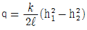
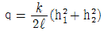
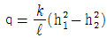
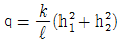
(정답률: 알수없음)
49. 다음 중에서 증발산량 산정방법이 아닌 것은?
- 증발산계에 의한 측정
- 물 수지 방법에 의한 계산
- 에너지 수지 방법에 의한 계산
- Hortpn의 경험공식에 의한 계산
(정답률: 알수없음)
50. 지하수의 유량을 구하는 Dary의 법칙으로 맞는 식은? (단. Q 는 유량, k 는 투수계수, ㅣ는 동수경사, A는 투과단면적, C 는 유출계수이다.)
- Q = CIA
- Q = kIA
- Q = C2IA
- Q = k2IA
(정답률: 알수없음)
51. 다음 중 유체의 흐름이 원관내에서 층류일 때 에너지 보정계수(α)와 운동량 보정계수(η)가 옳게된 것은?
- α = 2, η = 1.02
- α = 2, η = 4/3
- α = 1.1, η = 4/3
- α = 1.1, η = 4/3
(정답률: 알수없음)
52. 다음 그림과 같은 배의 무게가 89ton일 때 이 배가 운항하는데 필요한 최소수심은?
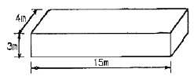
- 1.2m
- 1.5m
- 1.8m
- 2.0m
(정답률: 알수없음)
53. 수폭단면(vena contracta)에 관한 설명 중 옳지 않은 것은?
- 유출 물줄기의 최소 단면을 말한다.
- 원형 오리피스에서 수축단면의 위치는 대략 오리피스면 에서 d/2 거리이다. (여기서, d는 오리피스의 직경)
- 맴돌이(Vortex)에 의해서 일어난다.
- 오리피스 단면적에 대한 수축단면 단면적의 비를 수축계수라고 한다.
(정답률: 알수없음)
54. 물의 체적탄성계수를 E라고 하고 압축률을 C라고 할 때 E와 c의 관계가 옳은 것은?
- E ㆍ C = 0
- E ㆍ C = 1
- E ㆍ C = 10
- E ㆍ C = 100
(정답률: 알수없음)
55. 안지름 0.20m인 강관에 압력수두 100m의 물을 흐르게 하려면 강관에 요구되는 최소두께는? (단, 강재의 허용인장응력은 1000kg/cm2)
- 0.02cm
- 0.⑤cm
- 0.10cm
- 0.15cm
(정답률: 알수없음)
56. 단위폭당 0.8m3/sec이 흐르는 수평한 직사각형수로의 한계수심은? (단, α = 1.⑤ 임)
- 0.25m
- 0.34m
- 0.38m
- 0.41m
(정답률: 알수없음)
57. 내경200mm인 관의 조도계수 n이 0.02일 때 마찰손실계수는? (단, Manning 공식 등을 사용함)
- 0.085
- 0.090
- 0.093
- 0.096
(정답률: 알수없음)
58. 하천의 평균유속 Vm을 구하는 방법으로서 틀린것은? (단, V0는 표면유속, V0.2, V0.4, V0.6, V0.8는 수면으로부터 20%, 40%, 60%, 80%에 해당하는 수심을 나타낸다.)
- 1점법 : Vm = V0.6
- 2점법 : Vm =
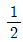
(V0.2 + V0.8) - 3점법 : Vm =
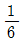
(V0.2 + 4V0.6 + V0.8) - 4점법 : Vm =
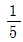
[(V0.2 + V0.4 + V0.6 + V0.8) + (V0.2 +
(V0.2 + 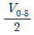
)]
(정답률: 알수없음)
59. 일정한 기간 동안에 어떤 크기의 호우가 발생할 횟수를 의미하는 것은? (문제 오류로 실제 시험에서는 1,3번이 정답처리 되었습니다. 여기서는 1번을 누르면 정답 처리 됩니다.)
- 호우빈도
- 지속강도
- 생기빈도
- 발생강도
(정답률: 알수없음)
60. 다음 물리량에 대한 차원을 설명한 것 중 옳지 않은 것은?
- 양력강도 : [ML-1 T-2]
- 밀도 : [ML-2]
- 점성계수 : [ML-1 T-1]
- 표면장력 : [MT-2]
(정답률: 알수없음)
4과목: 철근콘크리트 및 강구조
61. 그림과 같은 확대기초에서 위험단면에 대한 휨모멘트는?
- 980 kN ㆍ m
- 720 kN ㆍ m
- 700 kN ㆍ m
- 630 kN ㆍ m
(정답률: 알수없음)
62. 다음은 프리스트레스트 콘크리트에서 프리텐션 방식과 포스트텐션 방식의 장점을 열거한 것이다. 옳지 않은 것은?
- 프리텐션방식은 일반적으로 공장에서 제조되므로 제품의 품질에 대한 신뢰도가 높다.
- 프리텐션방식은 PS강재를 곡선으로 배치하기가 쉬어서 대형부재 제작에도 적합하다.
- 프리텐션 방식은 같은 모양과 치수의 프리캐스트 부재를 대량으로 제조할 수 있다.
- 포스트텐션 방식은 피리캐스트 PSC부재의 결합과 조립에 편리하게 이용된다.
(정답률: 알수없음)
63. 아래 그림과 맞대기 용접의 용접부에 생기는 인장응력은?
- 180MPa
- 141MPa
- 200MPa
- 223MPa
(정답률: 80%)
64. 강도설계법에 대한 기본가정 중 옳지 않은 것은?
- 평면인 단면은 변형 후에도 평면을 유지한다.
- 철근과 콘크리트의 응력과 변형률은 중립측으로부터 거리에 비례한다.
- 압축측은 연단에서 콘크리트의 최대변형률은 0.003으로 가정한다.
- 콘크리트의 인장강도는 휨계산에서 무시한다.
(정답률: 알수없음)
65. 인장철근의 종류에 따른 표준갈고리의 최소 구부림 내면반지름을 나타낸 것이다. 옳지 않은 것은?
- D19 : 철근지름의 3배
- D25 : 철근지름의 3배
- D29 : 철근지름의 4배
- D32 : 철근지름의 5배
(정답률: 알수없음)
66. 강도 설 계법에서 1방향 스래브(slab)의 구조 세목에 관한 사항 중 틀린 것은?
- 1방향 슬래브의 두께는 최소 100mm 이상이어야 한다.
- 슬래브의 정철근 및 부철 근의 중심 간격은 최대 휨모멘트가 일어나는 단면에서는 슬래브 두께의 2배 이하이어야 하고, 또한 300mm 이하로 하여야 한다.
- 슬래브의 정철근 및 부철 근의 중심 간격은 최대휨모멘트가 일어나지 않는 단면에서는 슬래브 두께의 3배 이하이어야 하고, 또한 500mm이하로 하여야 한다.
- 1방향 슬래브에서는 정철근 및 부철 근에 직각방향으로 수축 ㆍ 온도철근을 배치하여야 한다.
(정답률: 알수없음)
67. 길이 6m의 단순 철근콘크리트 보에서 처짐을 계산하지 않아도 되는 보의 최소 두께는 얼마인가? (단, 보통콘크리트(ωc = 2300kg/m3)를 사용하며, fck = 21MPa, fy = 400MPa)
- 356 mm
- 403 mm
- 375 mm
- 349 mm
(정답률: 알수없음)
68. 단 철근 직사각형 보에 하중이 작용하여 10mm의 탄성 처짐이 발생하였다. 모든 하중이 5년 이상의 장기하중으로 작용한다면 총처짐량은 얼마인가?
- 15mm
- 20mm
- 30mm
- 40mm
(정답률: 알수없음)
69. 다음 그림과 같은 단 철근 직사각형 보의 균형철근량을 계산하면? (단, fck = 21MPa, fy = 300MPa)
- 5090mm
- 5173mm
- 4550mm
- 5⑤5mm
(정답률: 알수없음)
70. 그림에 나타난 직사각형 단철근보의 공칭 전단 강도 Vn를 계산하면? (단, 철근D10을 수직스터럼(stirrup)으로 사용하며, 스터럼 간격은 200mm, 철근D10 1몰의 단면적은 71mm2, fck = 28MPa, fy = 350MPa이다.)
- 119kN
- 176kN
- 231kN
- 267kN
(정답률: 알수없음)
71. 그림과 같이 등분포하중을 받는 단순보에 PS강재를 e = 50mm만큼 편심 시켜서 직선으로 작용 시킬 때, 보중앙 단면의 하연 응력은 얼마인가? (단, 자증은 무시한다.)
- 69MPa(압축)
- 42MPa(압축)
- -33MPa(인장)
- -6MPa(인장)
(정답률: 알수없음)
72. 콘크리트의 설계기준강도 fck = 35MPa, 콘크리트의 압축강도 fc = 8MPa일 때 콘크리트의 탄성변형에 의한 PS 강재의 프리스트레스 감소량은? (단, n은 7)
- 40MPa
- 48MPa
- 56MPa
- 64MPa
(정답률: 알수없음)
73. 그림과 같은 프리스트레스트 콘크리트의 경간 중앙점에서 강선을 꺾었을 때, 이 꺾은 점에서의 상향력(上向力) U의 값은?
- U = F·sin θ
- U = 2F·sin θ
- U = F·tan θ
- U = 2F·tan θ
(정답률: 알수없음)
74. 균형철근량 보다 작은 인장접근을 가진 보가 휨에 의해 파괴되는 경우에 대한 설명으로 옳은 것은?
- 인장철근이 먼저 항복한다.
- 압축은 콘크리트가 먼저 파괴된다.
- 압축은 콘크리트와 인장철근이 동시에 파괴된다.
- 중립축이 인장 측으로 내려오면서 철근이 먼저 파괴된다.
(정답률: 알수없음)
75. 그림과 같은 복철근 직사각형 보의 Asʹ = 1916mm2, As = 4790mm2 이다. 등가직사각형의 응력의 깊이 a는? (단, fck = 21 MPa. fy = 300 MPa이다.)
- a = 150 mm
- a = 161 mm
- a = 171 mm
- a = 180 mm
(정답률: 알수없음)
76. 폭이 500mm, 유효깊이가 800mm 인 철근콘크리트보에서 fck가 28MPa인 콘크리트를 사용할 때 위험단면에 작용하는 계수전단력 Vu가 최대 얼마 이하이면 전단철근이 필요 없는 부재가 되는가?
- 124.2kN
- 133.5kN
- 141.1kN
- 150.7kN
(정답률: 알수없음)
77. 다음의 프리스트레스 손실 원인 중 도입할 때 일어나는 손실(즉시 손실)이 아닌 것은?
- 콘크리트의 탄성수축에 의한 손실
- PS강재의 릴랙세이션에 의한 손실
- 긴 장재와 쉬스의 마찰에 의한 손실
- 쟁착장치에서 긴장재의 활동에 의한 손실
(정답률: 알수없음)
78. 그림과 같은 이음에서 리벳의 강도는 얼마인가? (단, 리벳지름 d=22mm, τo = 100MPa, fba = 250MPa)
- 72.56 kN
- 76.03 kN
- 76.48 kN
- 79.25 kN
(정답률: 알수없음)
79. 보의 순경간이 ln이고, 보의 유효길이가 d인 보에서 ln/d가 최대 얼마 이하이면 깊은 보로 설계해야 하는가?
- 2.5
- 5.0
- 7.5
- 10.0
(정답률: 알수없음)
80. 강도 설 계법에서 fck가 40MPa 일 때 B1의 값은 얼마인가? (단, B1은 a = B1c에서 사용되는 계수)
- 0.731
- 0.766
- 0.836
- 0.85
(정답률: 알수없음)
5과목: 토질 및 기초
81. 어떤 흙의 전단실험결과 c=1.8kg/cm2, ø=35˚, 토립자에 작용하는 수직응력이 ∂= 3.6kg/cm2 일 때 전단강도는?
- 4.89kg/cm2
- 4.32kg/cm2
- 6.33kg/cm2
- 3.86kg/cm2
(정답률: 알수없음)
82. 지표가 수평인 연직 옹벽에 있어서 (주동토압 계수)/(수동토압 계수)의 값으로 옳은 것은? (단, 흙의 내부 마찰각은 30˚이다.)
- 1/3
- 1/6
- 1/9
- 1/12
(정답률: 0%)
83. 얕은 기초의 극한 지지력을 결정하는 데르쟈기의 이론에서 하중Q가 점차 증가하여 푸팅이 아래로 침하할 때 다음 설명 중 옳지 않은 것은?
- Ⅰ의 ΔACD구역은 탄성영역이다.
- Ⅱ의 ΔCDE구역은 방사방향의 전단영역이다.
- Ⅲ의 ΔCEG구역은 랭킨(Rankine)의 주동영역이다.
- 원호 DE와 FD는 대수 나선형의 곡선이다.
(정답률: 알수없음)
84. 말뚝의 지지력 공식 중 정역학적 방법에 의한 공식은 다음 중 어느 것인가?
- Meyerhof의 공식
- Hiley공식
- Engineering-News공식
- Sander공식
(정답률: 알수없음)
85. 평판재하시험이 끝나는 다음 조건 중 옳지 않은 것은?
- 침하량이 15mm에 달할 때
- 하중 감도가 현장에서 예상되는 최대 접지 압력을 초과 할 때
- 하중강도가 그 지반의 항복점을 넘을 때
- 흙의 함수비가 소성한계에 달할 때
(정답률: 알수없음)
86. 점토지반을 프리로딩(Pre-Loading) 공법 등으로 미리 압임 시킨 후에 급격히 재하할 때의 안정을 검토하는 경우에 적당한 전단시험은?
- 비압밀 비배수 전단시험
- 암밀 비배수 전단시험
- 압밀 배수 전단시험
- 압밀 완속 전단시험
(정답률: 알수없음)
87. 연경도 지수에 대한 설명으로 잘못된 것은?
- 소성지수는 흙이 소성상태로 존재할 수 있는 할수비의 범위를 나타낸다.
- 액성지수는 자연 상태인 흙의 함수비에서 소성한계를 뺀 값을 소성지수로 나눈 값이다.
- 액성지수 값이 1보다 크면 단단하고 압축성이 작다.
- 컨시스턴시지수는 흙의 안정성 판단에 이용하며, 지수 값이 클수록 고체 상태에 가깝다.
(정답률: 알수없음)
88. 동일 분류법에서 실 트질 자갈을 표시하는 약호는?
- GW
- GP
- GM
- GC
(정답률: 알수없음)
89. 부피가 2208cm3 이고 무게가 4000g 인 몰드에 흙을 다져 넣어 무게를 측정하였더니 8294g 이었다. 이 몰드에 있는 흙을 시료추출기를 사용하여 추출한 후 함수비를 측정하였더니 12.3% 였다. 이 흙의 건조 단의중량은 얼마인가?
- 1.945 g/cm3
- 1.732 g/cm3
- 1.812 g/cm3
- 1.614 g/cm3
(정답률: 알수없음)
90. 포화 점토에 대해 베인전단시험을 하였다. 베인의 직경과 높이는 각각 5cm, 10cm이고 시험 도중에 사용된 최대회전 모멘트는 150kg·cm이었다. 이 점성토의 비배수 전단강도는 얼마인가?
- 0.13kg/cm2
- 0.25kg/cm2
- 0.33kg/cm2
- 0.45kg/cm2
(정답률: 알수없음)
91. 표준 관입 시험에 대한 아래 표의 성명에서 ( )에 적합한 것은?
- 20
- 25
- 30
- 35
(정답률: 알수없음)
92. 아래 그림과 같이 사질토 지반에 타설된 무리말뚝이 있다. 말뚝은 원형이고 직경은 0.4m, 설치간격은 1m이었다. 이 무리말뚝의 효율은 얼마인가? (단, Converse-Labarre 공식을 사용할 것)
- 0.56
- 0.62
- 0.68
- 0.75
(정답률: 알수없음)
93. Sand draln 공법의 주된 목적은?
- 압밀침하를 촉진시키는 것이다.
- 투수계수를 감소시키는 것이다.
- 간극수압을 증가시키는 것이다.
- 지하수위를 상승시키는 것이다.
(정답률: 알수없음)
94. 다음은 지하수 흐름의 기본 방정식인 Laplace 방정식을 유도하기 위한 기본 가정이다. 틀린 것은?
- 물의 흐름은 Darcy의 법칙을 따른다.
- 흙은 등방성이고 균질하다.
- 흙은 포화되어 있고 모세관 협상은 무시한다.
- 흙과 물은 압축성이다.
(정답률: 알수없음)
95. 점토층에서 채취한 시료의 양촉지수 C0 = 0.39, 간 극비 e = 1.26 이다. 이 점토층 위에 구조물이 축조되었다. 축조되기 이전의 유효압력은 8.0t/m2, 축조된 후에 증가된 유효압력은 6.0t/m2이다. 점토층의 두께가 3m일때 압밀침하량은 얼마인가?
- 12.6m
- 9.1m
- 4.6m
- 1.3m
(정답률: 알수없음)
96. 모래층에 널말뚝을 사용하여 웁막이를 한 곳이 있다. 군사 현상이 일어나지 않도록 하기 위하여 취한 조치중 틀린 것은?
- 널말뚝을 더 깊게 박는다.
- 모래의 포화단위 중량이 작은 것으로 바꾼다.
- 모래를 조밀하게 다진다.
- 상류 측과 하류 측의 수위차를 줄인다.
(정답률: 42%)
97. 흙의 습윤 단위중량이 1.70t/m3, 내부 마찰각이 8˚, 정착력이 0.35kg/cm2인 어느 지반을 연직으로 굴착하고자 할 때 몇 m까지 굴착 가능한가?
- 0.632m
- 0.947m
- 6.32m
- 9.47m
(정답률: 알수없음)
98. 흙의 다짐효과에 대한 설명으로 옳은 것은?
- 부착성이 양호해지고 흡수성이 증가한다.
- 투수성이 증가한다.
- 압축성이 커진다.
- 밀도가 커진다.
(정답률: 알수없음)
99. 점토질 지반에 있어서 강성기초의 점지암 분포에 관한 다음 설명 가운데 옳은 것은?
- 기초의 모서리 부분에서 최대응력이 발생한다.
- 기초의 중앙부분에서 최대의 응력이 발생한다.
- 기초부분의 응력은 어느 부분이나 동일하다.
- 기초 입면에서의 응력은 토질에 관계없이 일 정하다.
(정답률: 알수없음)
100. 다음 그림에서 전수두자를 일정하게 유지하고 있을 경우 a - a면상의 침투수압은 얼마인가? (단, 비중 G = 2.65, 간 극비 e = 0.80)
- 30 g/cm2
- 25 g/cm2
- 20 g/cm2
- 15 g/cm2
(정답률: 알수없음)
6과목: 상하수도공학
101. 자연유하식 도수관의 허용 최대 평균유속은?
- 0.3 m/s
- 1.0 m/s
- 3.0m/s
- 10.0 m/s
(정답률: 알수없음)
102. 유입하수량10000m3/day, 유입BOD농도 120mg/L, 폭기조내 MLSS농도 2000 mg/L, BOD부하 0.5jgBOD/KGMLSS·day 일 때 폭기조의 용적은?
- 600 m3
- 1200 m3
- 2000 m3
- 2500 m3
(정답률: 알수없음)
103. 펌프가 급정지할 때 발생하는 수격현상(water hammer)에 관한 다음 설 명중 틀린 것은?
- 관로 내의 물의 관성에 의해 발생한다.
- 펌프날개의 회전관성에 의해 발생한다.
- 펌프, 밸브 등의 파손원인이 된다.
- 토출고 부근에 공기탱크를 두어 방지할 수 있다.
(정답률: 알수없음)
104. 다음 관거별 계획하수량에 대한 설 명중 옳은 것은?
- 오수관거는 계획1일최대오수량으로 한다.
- 우수관거는 계획우수량으로 한다.
- 합류식관거는 계획1일최대오수량에 계획우수량을 합한 것으로 한다.
- 차집관거에서는 청천시 계획오수량으로 한다.
(정답률: 알수없음)
1⑤. 하수처리장에서 발생하는 슬러지를 혐기성으로 소화하는 목적과 가장 거리가 먼 것은?
- 슬러지의 무게와 부피를 감소시킨다.
- 병원균을 죽이거나 통제할 수 있다.
- 유기물을 분해하여 안정화시킨다.
- 이용가치가 있는 유기산을 부산물로 얻을 수 있다
(정답률: 알수없음)
106. 하수관거의 관정부식(crown corrosion)의 주된 원인물질은 어느 것인가?
- N 화합물
- S 화합물
- Caghkgkqanf
- Fe 화합물
(정답률: 알수없음)
107. 다음 중 호수의? (문제 오류로 문제 및 보기 내용이 정확하지 않습니다. 정확한 내용을 아시는 분께서는 오류신고를 통하여 내용 작성 부탁드립니다. 정답은 3번입니다.)
- 산소
- 수은
- 인
- 카드뮴
(정답률: 알수없음)
108. 다음 중 펌프의 양수 량을 조절하는 방식이 아닌 것은?
- 펌프의 회전 방향을 변경하는 방법
- 토출밸브의 개폐 정도를 변경하는 방법
- 펌프의 회전수를 변화하는 방법
- 펌프의 운전대수를 증감하는 방법
(정답률: 알수없음)
109. 어느 지역에 내린 강수가 하수관거에 유입되는 시간이 7min 이고 하수관거의 길이는 540m이며 관내의 유속이 0.9m/s 이라면 하수관거 내의 유달 시간은?
- 607 min
- 302min
- 32min
- 17min
(정답률: 알수없음)
110. 침전지의 침전효율을 증가시키기 위한 방법이 아닌 것은?
- 2층식 침전지를 사용한다.
- 블록의 침강속도를 크게 한다.
- 표면부하율을 높인다.
- 경사판을 이용한다.
(정답률: 알수없음)
111. 지표수의 취수시설로 적당하지 않은 것은?
- 취수율
- 취수탑
- 취수틀
- 침수매거
(정답률: 50%)
112. 전 염소 처리의 목적과 가장 거리가 먼 것은?
- 세균제거
- 벌킹제거
- 철과 망간의 제거
- 암모니아성 질소제거
(정답률: 알수없음)
113. 다음 중 염소소독시 소독력에 가장 큰 영향을 미치는 수질인자는?
- 총 경도
- 알칼리도
- pH
- 탁도
(정답률: 알수없음)
114. 다음 중 계획1일최대급수량을 시설 설계 기준으로 하지 않는 것은?
- 도수시설
- 배수시설
- 정수시설
- 취수시설
(정답률: 알수없음)
115. 인구 1인당 생활오수의 BOD오염부하 원단위를 50g/인·일 이라 할때 인구 10만 도시의 하수처리장에 유입되는 BOD부하는?
- 5000kg/일
- 500kg/일
- 50kg/일
- 50ton/일
(정답률: 알수없음)
116. 관로 유속의 급격한 변화로 인한 충격현상으로 관내압력이 급상승 또는 급강하 하는 현상을 무엇이라 하는가?
- 공동현상
- 수격현상
- 진공현상
- 부압현상
(정답률: 알수없음)
117. 주거지역(면적 3ha, 유출계수 0.5), 상업지역(면적 2ha, 유출계수 0.7) 녹지(면적 1ha, 유출계수 0.1) 로 구성된 지역의 평균 유출계수는?
- 0.4
- 0.5
- 0.6
- 1.3
(정답률: 알수없음)
118. 다음의 공식 중 상수도 배수관 설계에 가장 많이 사용되는 공식은?
- Kutter 공식
- Manning공식
- Hazen-Williams공식
- Forchheimer공식
(정답률: 알수없음)
119. 하수관거의 부속설비에 대한 설명으로 옳지 않은 것은?
- 맨홀(Manhole)은 하수관거의 청소, 점검, 보수 등을 위해 사람의 출입과 통풍 및 환기 등을 목적으로 설치한 시설이다.
- 우수받이(Street lnlet)는 우수내의 고형 부유물이 하수관거 내에 침전하여 일어나는 부작용을 방지하기 위한 시설이다.
- 역사이폰(Inverted Syphon)은 하천, 철도, 지하철 등의 지하매설물을 횡단하기 위해 수두 경사선 이하로 매설된 하수관거 부분이다.
- 토구(Outfail)는 하천 또는 바다물이 하수관거내로 유입되는 것을 방지하는 시설이다.
(정답률: 알수없음)
120. 상수도계통에서 배수지로 가장 적당한 위치는?
- 충분한 수압을 가지고 취수시설에 가까운 곳
- 충분히 정화시킬 수 있는 정수시설에서 가까운 곳
- 충분한 수량을 취수할 수 있는 수원지에서 가까운 곳
- 급수구역에서 가깝고 적당한 수두를 얻을 수 있는 곳
(정답률: 알수없음)